Упражнение 8 Соединение табличных данных
8.1 Введение
Цель задания — научиться использовать данные из внешних таблиц для построения карт.
| Параметр | Значение |
|---|---|
| Теоретическая подготовка | Соединение таблиц в реляционных базах данных, внешний и внутренний ключ соединения, картограммы, картодиаграммы |
| Практическая подготовка | Знание основных компонент интерфейса ArcGIS Desktop (каталог, таблица содержания, карта). Работы с базой пространственных данных. Настройка символики и подписей объектов. |
| Исходные данные | Слои статистических единиц Евросоюза NUTS и таблицы показателей с портала NUTS |
| Результат | Карта количества транспортных средств в Швейцарии по единицам 3-го уровня, карта плотности и структуры населения Швейцарии по единицам 3-го уровня |
| Ключевые слова | Статистические данные, картограммы, картодиаграммы, соединение таблиц, визуализация статистических данных. |
8.1.1 Контрольный лист
- Скачать слои административно-территориального деления с сайта NUTS.
- Скачать статистические таблицы NUTS на уровень 3.
- Присоединить таблицы статистики к слою административных единиц.
- Создать карту количества автомобилей способом картодиаграмм.
- Создать карту населения способом картограмм и секторных картодиаграмм.
8.1.2 Аннотация
В основе многих социально-экономических карт лежат статистические данные, которые обычно предоставляются в табличном виде. Задание посвящено знакомству с созданием карт в среде ГИС на основе табличных данных. В качестве примера используется официальная статистика Евросоюза, размещенная на сайте NUTS. Попутно при выполнении задании вы познакомитесь с операцией соединения таблиц.
8.2 Скачивание географических данных с сайта NUTS
Перейдите на главную страницу NUTS и прочитайте краткую информацию на ней.
Выберите в правой части окна пункт меню NUTS Geodatafiles at GISCO.
Скачайте файлы NUTS 2010 для масштаба 1:3 Million в формате Personal GDB и сохраните их себе в каталог Ex08.

8.3 Скачивание таблиц с сайта NUTS
На главной странице NUTS выберите в правой части окна пункт меню Statistics on regions and cities.
-
На сайте статистики NUTS выберите пункт Database, чтобы перейти к просмотру таблиц базы данных:
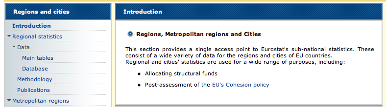 -
Найдите таблицу плотности населения по регионам Population density - NUTS 3 regions (demo_r_d3dens) и нажмите иконку слева от нее:
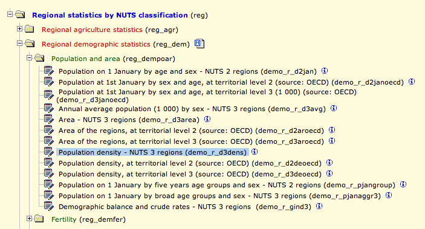 -
Нажмите Table Customization > Show, чтобы настроить содержание таблицы:

Установите режим Codes, чтобы в первом столбце отображались уникальные идентификаторы вместо названий единиц.
-
Нажмите кнопку Download, чтобы скачать таблицу:

В появившемся окне нажмите кнопку Download in Excel format, не меняя никаких настроек.
Скачайте аналогичным образом таблицу Stock of vehicles by category and NUTS 2 regions (tran_r_vehst), содержащую статистику по количеству зарегистрированных транспортных средств в регионах.
8.4 Скачивание структурных таблиц с сайта NUTS
Найдите таблицу Population on 1 January by broad age groups and sex - NUTS 3 regions и откройте ее.
-
Нажмите кнопку Select Data в заголовке сайта:

-
В левой части окна выберите вкладку AGE, отметьте галочками все пункты и нажмите UPDATE, чтобы обновить таблицу:
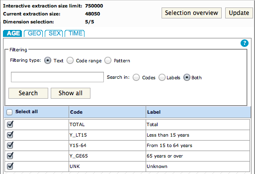 Нажмите вкладку VIEW Table в верхней части окна, чтобы перейти к просмотру таблицы.
-
Схватите мышкой показатель Age и переместите его в таблицу на место показателя TIME:

В результате таблица должна приобрести искомую структуру, в которой показана структура населения по 3 категориям: до 15 лет (дети), 15-64 года (трудоспособные) и старше 64 лет (пенсионеры). Помимо этого есть поле Unknown для населения неустановленной возрастной категории:
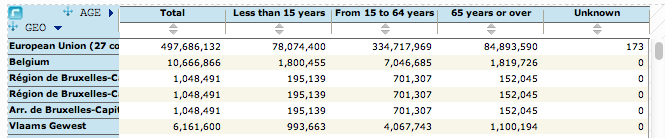 Включите режим показа кодов вместо названий единиц.
Скачайте таблицу в формате Microsoft Excel.
8.5 Форматирование таблиц для загрузки в ГИС
Чтобы скачанные таблицы можно было использовать в ГИС, их нужно отформатировать следующим образом:
Удалите все строки выше заголовка.
Переименуйте поле GEO/TIME в GEO.
-
Переименуйте поля таким образом, чтобы:
- Они не содержали пробелов, символов “ / “, “ -” и тому подобных. Символ подчеркивания “_” допускается.
- Название поля начиналось с буквы.
Установите столбцам показателей числовой формат с необходимым числом десятичных знаков.
-
Сохраните таблицы под названиями:
- Density.xls (плотность населения),
- Population.xls (структура населения),
- Vehicles.xls (число зарегистрированных транспортных средств).
Пример преобразования таблиц представлен на рисунках ниже.
Было:

Стало:

8.6 Подготовка проекта
Откройте ArcMap и создайте новый документ карты в каталоге Ex08.
Добавьте на карту слой Countries из базы данных предудыщего упражнения.
-
Добавьте на карту слой NUTS_RG_03M_2010 из базы данных, которую вы скачали с сайта. Она находится в каталоге PGDB/data:
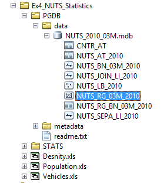 Присвойте добавленному слою символ полигона без заливки с обводкой красного цвета и переименуйте его в NUTS.
-
Выделите в таблице слоя NUTS строку, в которой
NUTS\_ID = “CH”, которая соответствует региону Швейцарии. Обратите внимание на то, что таблица может быть отсортирована не по алфавиту, а по статусу единицы:
-
Выделите все регионы, находящиеся внутри выделенной единицы, используя пространственный запрос со следующими параметрами:
Параметр Значение Слой искомых объектов NUTS Слой-источник NUTS Пространственный запрос Are within the layer feature Результат: 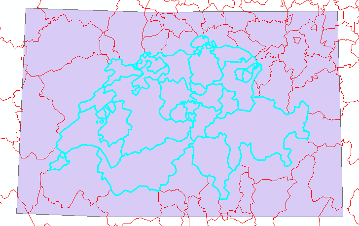
Создайте новый слой на основе выбранных объектов он получит название «NUTS selection».
Отключите исходный слой NUTS.
8.7 Отображение картодиаграмм по единицам 2-го уровня
Скопируйте слой NUTS selection, вставьте и назовите его Транспортные средства (NUTS 2).
-
С помощью определяющего запроса в окне конструктора запроса включите единицы 2-го уровня, введя строку:
\[STAT\_LEVL\_CODE\] = 2При вводе строки используйте двойной щелчок на названии вместо ввода текста вручную.
Результат: 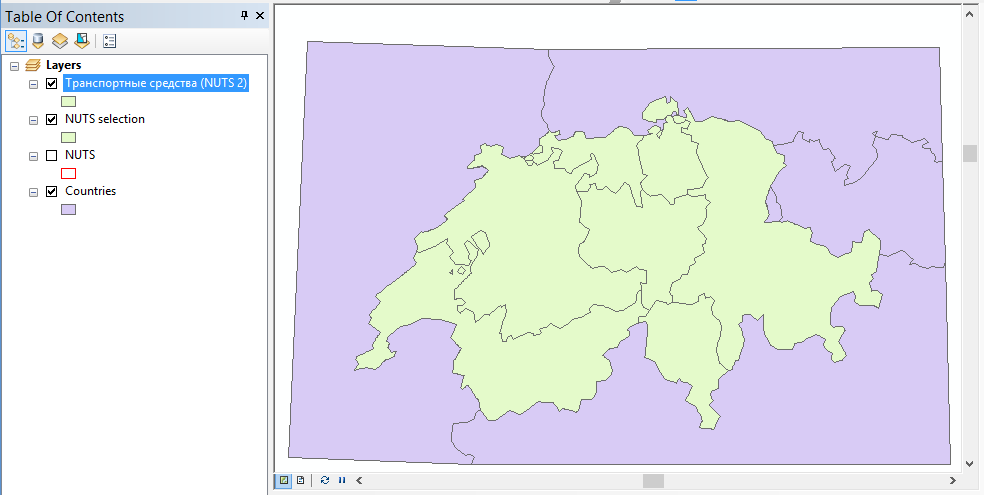
-
Добавьте на карту лист Data таблицы Vehicles и переименуйте его в Vehicles:
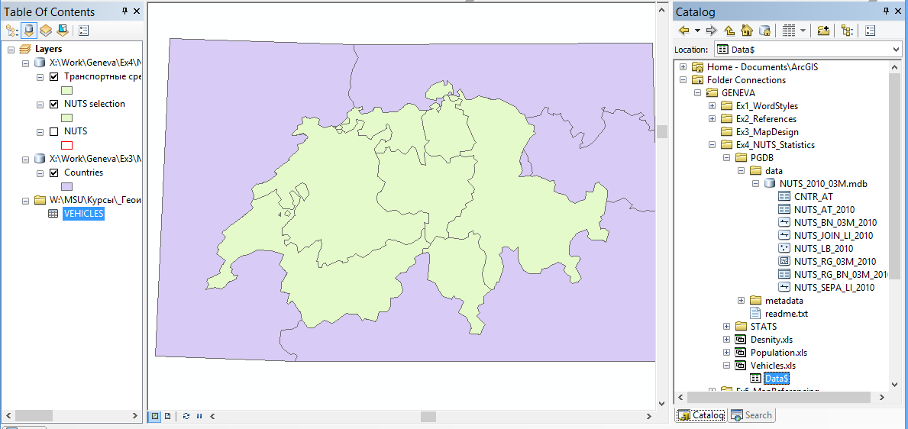 -
Раскройте таблицу слоя Транспортные средства, чтобы просмотреть состав атрибутивных полей. Таблица содержит поле NUTS_ID, содержащее уникальные идентификаторы единиц NUTS.
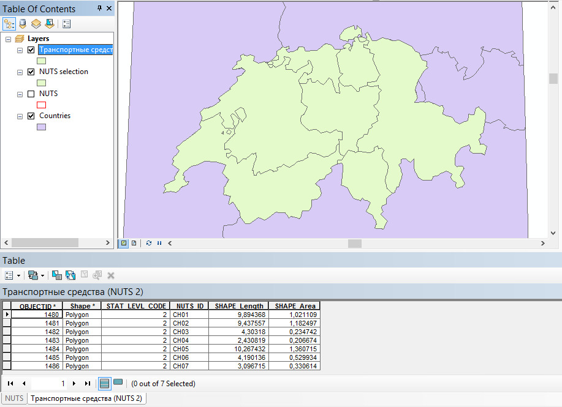 -
Присоедините таблицу VEHICLES к слою Транспортные средства, используя следующие параметры:
Параметр Значение Ключевое поле слоя NUTS_ID Присоединяемая таблица VEHICLES Ключевое поле таблицы GEO Раскройте таблицу слоя Транспортные средства (NUTS 2), чтобы убедиться в результате: 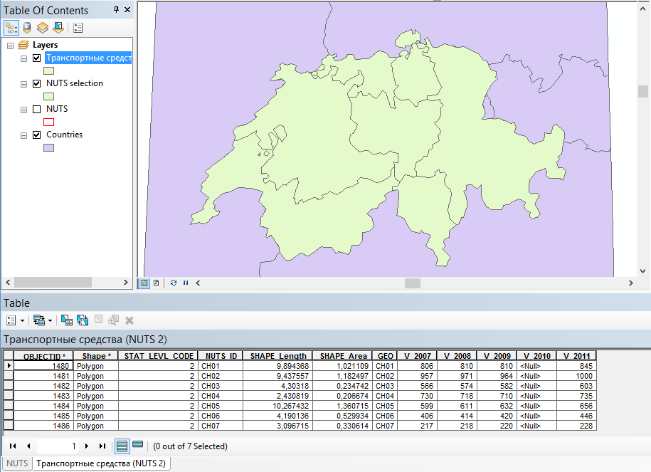
-
Включите для слоя способ градуированных символов (картодиаграммы), используя следующие параметры:
Параметр Значение Поле показателя 2011 год Размер значка От 15 до 60 Метод классификации Равноинтервальный с шагом 200 (Defined Interval) Фоновый символ Без заливки Цвет диаграммы выберите по своему вкусу. Диалог примет следующий вид: 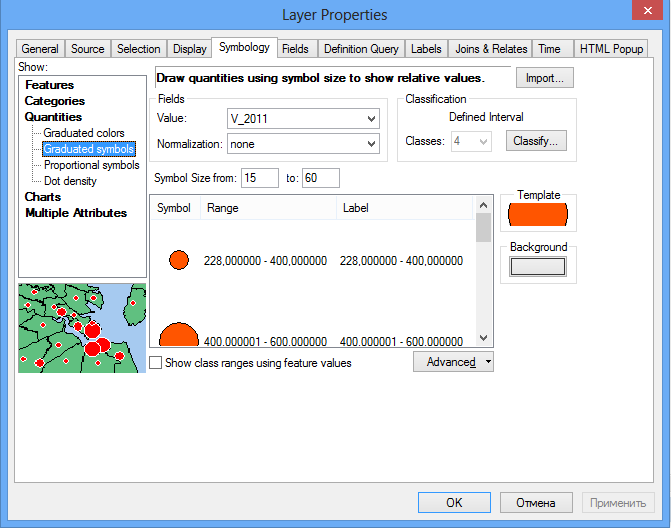 -
Переименуйте название показателя в таблице слоев в «тысяч штук».
Результат: 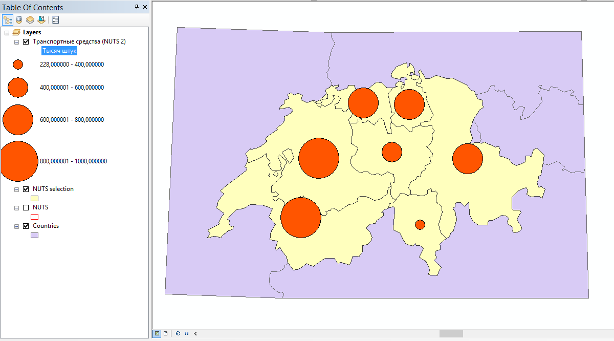
8.8 Отображение картограмм по единицам 3-го уровня
Скопируйте слой NUTS selection и назовите его «Плотность населения (NUTS 3)».
Включите единицы 3-го уровня, по аналогии с единицами 2-го уровня.
Добавьте на карту лист Data таблицы Density и переименуйте его в DENSITY.
Присоедините таблицу DENSITY к слою Плотность населения, используя те же поля, что и в случае слоя транспорта.
-
Включите для слоя метод отображения Graduated Colors (картограммы), используя следующие параметры:
Параметр Значение Поле статистики 2011 год Цветовая шкала От желтого к коричневому (по умолчанию) Метод классификации Дженкса (естественных интервалов) Количество интервалов 5 Диалог свойств слоя примет следующий вид:
Переименуйте название показателя в таблице содержания в «чел/кв. км.».
Перенесите слой со статистикой транспорта так, чтобы он располагался поверх слоя плотности населения и увеличьте толщину обводки полигонов до 1.5 пиксела.
8.9 Отображение структурных картодиаграмм по единицам 3-го уровня
Скопируйте слой NUTS selection и назовите его «Структура населения (NUTS 3)».
Включите единицы 3-го уровня.
Добавьте на карту лист Data таблицы Population и переименуйте его в POPULATION.
Присоедините таблицу POPULATION к слою Структура населения.
-
Определите русскоязычные псевдонимы полям на вкладке Fields:
- Y_LT15 — моложе 15 лет,
- Y_15_64 — от 15 до 64 лет,
- Y_GE65 — старше 64 лет,
- TOTAL — человек.
Результат:
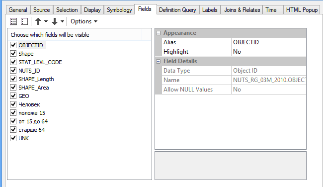 -
Включите для слоя метод отображения Pie Charts (секторные диаграммы), используя следующие параметры:
Параметр Значение Поля статистики моложе 15 лет, от 15 до 64 лет, старше 64 лет Цвета Выберите на свой вкус Минимальный размер 5 Размер По полю “Человек” (TOTAL) Диалог примет следующий вид:
Результат: 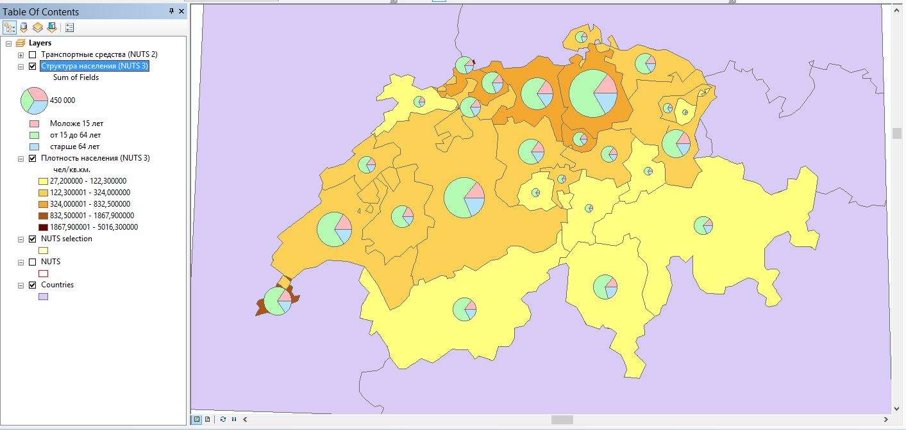
Структура населения в целом очень похожа по регионам, при этом незначительно варьируется численность населения пенсионного и нетрудоспособного населения.
8.10 Оформление итоговых карт
Добавьте на карту слой городов из базы данных задания 3.
-
С помощью определяющего запроса оставьте только те города, у которых значение поля
Pop\_Rank <= 6. Это города с населением 50 000 человек и более: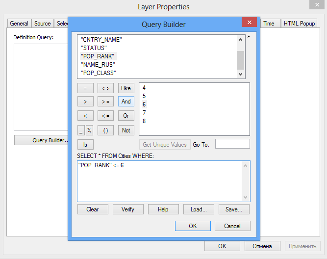 Оформите слой городов аналогично заданию 3, разделив их на классы.
Включите подписи стран.
Перекрасьте страны в нейтрально-серый цвет.
Установите масштаб карты равным 1:2 000 000.
Переключитесь в режим компоновки и установите альбомную ориентировку.
-
Подгоните размер фрейма таким образом, чтобы он охватывал страну с небольшим запасом.
Результат: 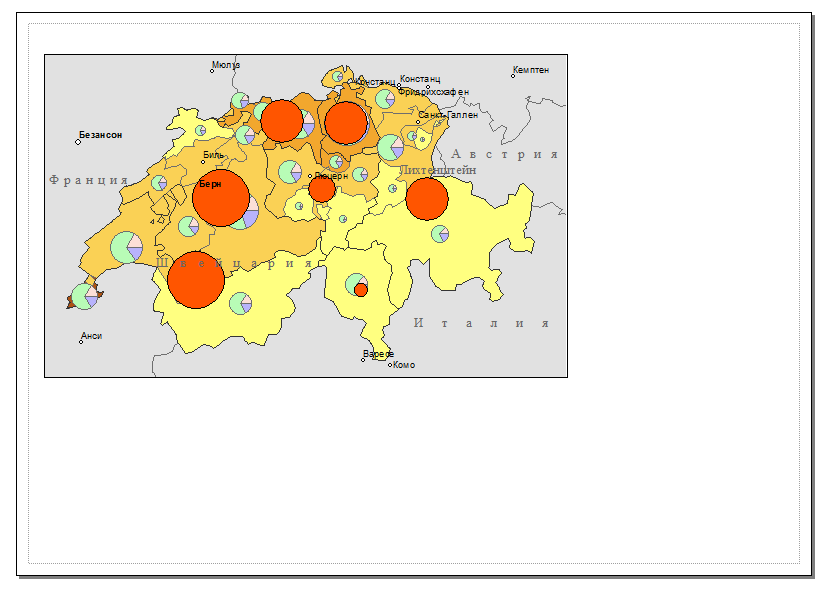
Пока что не обращайте внимания на то, что слои перекрывают друг друга. При экспорте вы будете оставлять включенным только один из них.
Добавьте на карту легенду, включив в нее слои Транспортные средства, Структура населения и Плотность населения.
Переведите элементы легенды на русский язык и сотрите заголовок легенды.
Вставьте заголовок карты «ШВЕЙЦАРИЯ» и масштабную линейку.
8.11 Экспорт карты числа транспортных средств
Отключите слои плотности населения и структуры населения. В легенде останется только слой с картодиаграммами.
-
Отредактируйте подписи классов таким образом, чтобы убрать у них незначащие нули.
Результат: 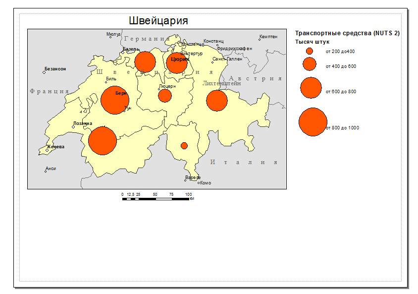
Экспортируйте карту в графический файл формата PNG c разрешением 300 dpi.
8.12 Экспорт карты населения
Включите слои плотности населения и структуры населения. Отключите слой транспортных средств.
Включите отображение названия слоя в легенде для слоя Структура населения.
-
Уберите незначащие нули в подписях классов слоя плотности населения, оставив один знак после запятой.
Результат: 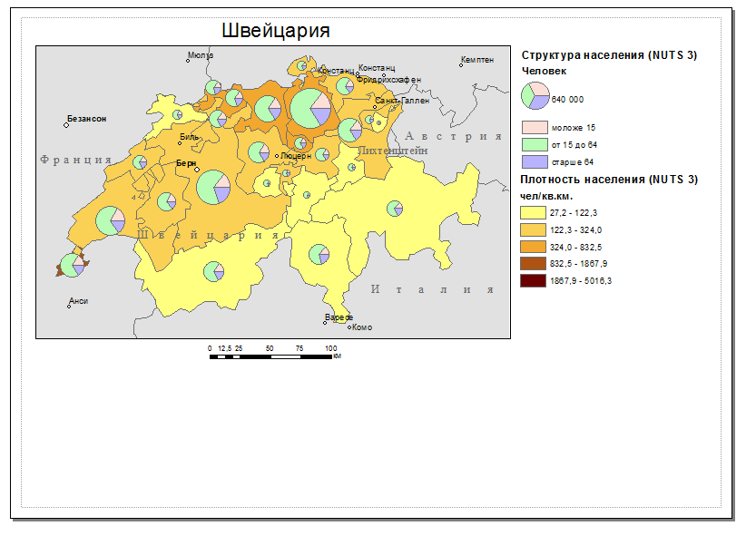
Экспортируйте карту в графический файл формата PNG c разрешением 300 dpi.
8.13 Контрольные вопросы
Каким требованиям должны отвечать таблицы для их успешной загрузки в ГИС?
Что такое соединение таблиц? Опишите последовательность действий для соединения таблиц в ArcGIS?
Где хранятся числовые данные, которые используются для построения картограмм и картодиаграмм?
Как должны быть организованы данные показателей в таблице для построения структурных картодиаграмм?